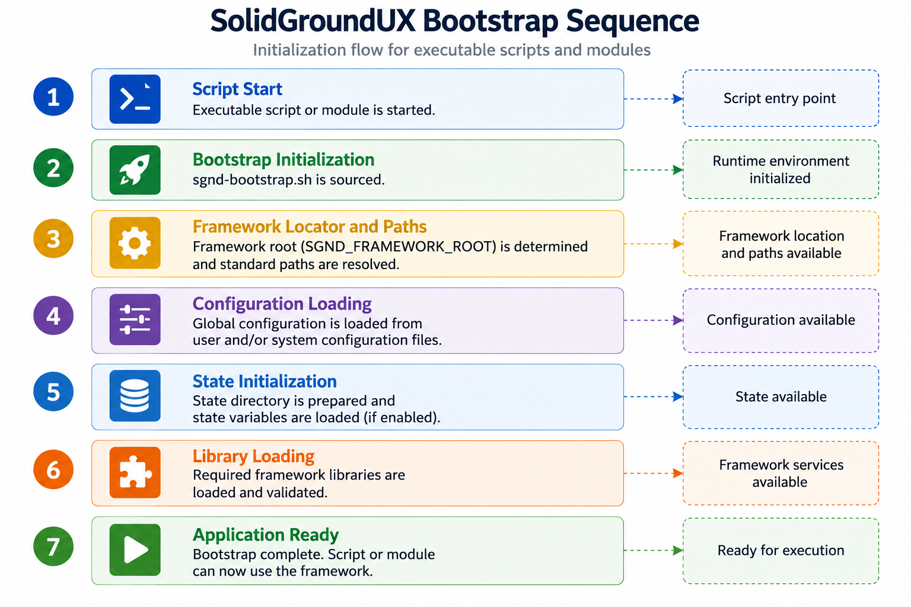

SolidGroundUX Documentation
Bootstrap Architecture

Startup deliberately has a small pre-bootstrap boundary:
executable
-> _framework_locator
-> sgnd-exe-common
-> sgnd-bootstrap
-> bootstrap environment/configuration/state
-> requested libraries
-> application main
The locator and executable-common layer must work before the full Framework runtime exists. Once bootstrap has completed, applications should use normal Framework APIs rather than duplicating root, configuration, or library-resolution logic.